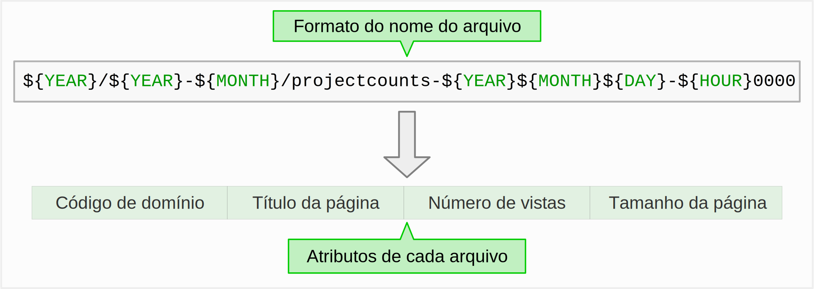
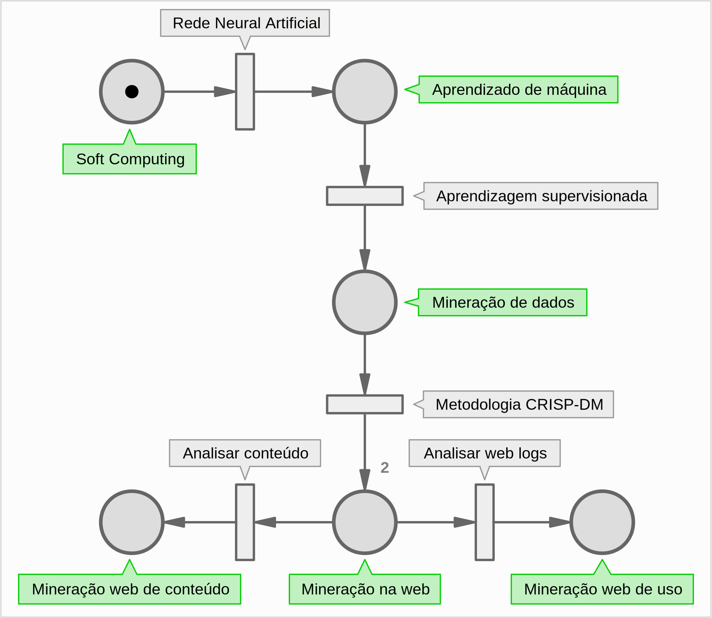
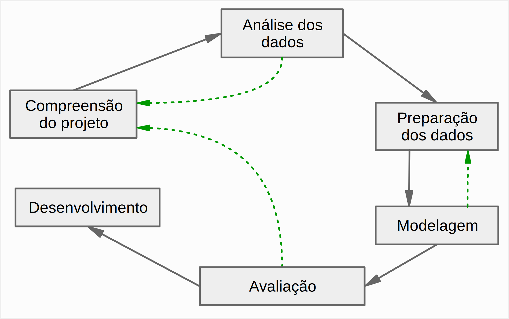
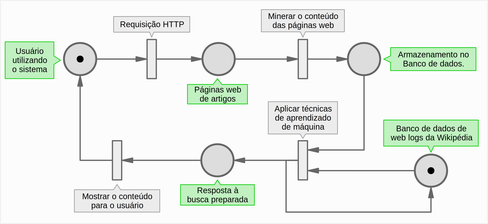

Universidade Federal do Ceará
Campus Sobral
Extração, classificação e reconhecimento de padrões de informação contida em artigos acadêmicos utilizando mineração web de conteúdo e mineração web de uso
Ken E. Ccorahua
Objetivos
- Extrair: Artigos da Web
- Classificar: Artigos + Web Logs
- Reconhecer: Padrões de acessos a partir de Web Logs
-
Aplicação Web em Django
Justificativa
E-commerce e aplicações Web

Justificativa
Artigos da Wikipédia e de outras fontes semelhantes

Web logs?
Composição dos Web logs da Wikipédia
Fundamentação teórica

Materiais e Métodos


Metodologia CRISP-DM
Atividades da aplicação
